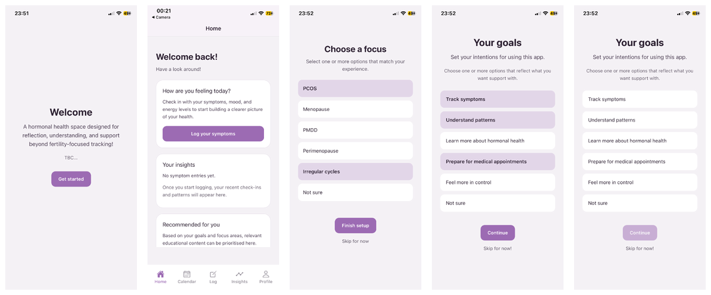

Most period-tracking apps assume a regular cycle and a fertility goal. Hormone+ asks a different question: not "when is your next period," but "how are you actually feeling."
FemTech has grown fast, but only around 3% of global digital health funding goes toward it — and most of that concentrates on fertility and early reproductive health. Perimenopause, menopause, PCOS, and PMDD remain an afterthought in most product design, despite affecting a huge number of people.
I researched this properly rather than assuming I already knew the shape of the problem:
The pattern was consistent across all three sources: existing tools are built for a "default" user, and everyone outside that default experiences the app as something that quietly excludes them.
Language like "irregular" and "late" came up repeatedly as a source of anxiety — apps were quietly telling people something was wrong with them for not matching an assumed norm.
Each requirement traces back to a specific finding, not a personal opinion about what the app should do:
| Requirement | Why |
|---|---|
| Track mood, energy, sleep & cognitive symptoms | Named as the most under-supported symptoms in survey responses |
| No fertility goals or cycle regularity required | Fertility features rated "irrelevant" by a majority of respondents |
| Interpretive summaries, not just raw data | Users reported getting data with no meaningful explanation |
| User-defined personal goals | Goal-oriented use outperformed predictive accuracy as an engagement driver |
| Inclusive, non-judgemental language | "Irregular" / "late" directly named as anxiety-inducing in research |
This is also where the strongest design principle came from: no cyclical imagery. Circular, cycle-based visuals are the default in this category — but they quietly encode the same assumption of regularity the research identified as the core problem. Removing it was a deliberate, research-backed constraint, not a style choice.
This is a genuine, working React Native app — not a static prototype. Five screens (Home, Calendar, Log, Insights, Profile), local data persistence, and an onboarding flow that dynamically shapes what the rest of the app shows.

I'll be direct about this because it's the most useful part of the reflection: the visual execution didn't fully catch up to the design intent. The original wireframes had a considered identity — warm purple palette, clear hierarchy, deliberate colour and icon use to soften what's usually a clinical category of app. The shipped build, under real dissertation time pressure, ended up closer to functional default styling.
So alongside the real screenshots above, I rebuilt the core flow as a polished prototype representing what the design was actually aiming for — same purple system, same structure and copy, executed the way the wireframes intended.
Functional testing covered every core interaction — onboarding (including skip paths), symptom logging, editing and deleting logs, and insight display — across 11 test cases. All passed, including edge cases like saving a log with no symptoms selected, confirming the app handles incomplete input gracefully.
Usability testing was conducted informally with 5 people, three of whom had also taken part in the original survey. Feedback was consistently positive on navigation and the intuitiveness of logging symptoms; the most repeated critical feedback was that the interface felt too minimal, with some wanting more visual elements like graphs.
Requirements validation was honest rather than self-congratulatory: of 5 functional requirements, 3 were fully met and 2 marked "partially met" — the symptom range wasn't substantially expanded beyond existing apps, and interpretive summaries used simple rule-based logic rather than anything more sophisticated.
Strengths — the research is the backbone of this project, not decoration. Every decision, from the requirements table to the absence of cyclical imagery, traces back to a specific finding. It's a genuinely built, working app, demonstrating the full research-to-code pipeline rather than stopping at design.
Limitations — visual execution lagged the design vision, as covered above. There's no backend: data is stored locally only, with no account, sync, or cloud storage. Insights are rule-based rather than adaptive — API/AI-driven insight generation was explored but cut for scope. And the app has never been deployed or tested at real scale; five informal sessions validate the core flow, not long-term engagement.
Future improvements — carry the visual system from the prototype above back into the real codebase; introduce a real backend with encrypted, user-controlled storage; explore lightweight on-device pattern detection so insights can move from rule-based to genuinely personalised; and expand testing to structured sessions over several weeks.
I wasn't happy with this project when I submitted it — mainly because of the gap between what I'd designed and what I'd managed to build under time pressure. Looking at it again properly: the thing that actually makes this project strong was never the visual polish. It's that I did real primary research on a genuinely underserved topic, let that research shape every decision without compromise, and then actually built it rather than stopping at a prototype.